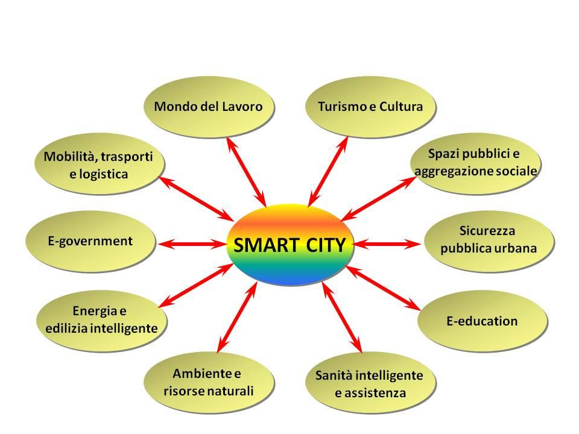
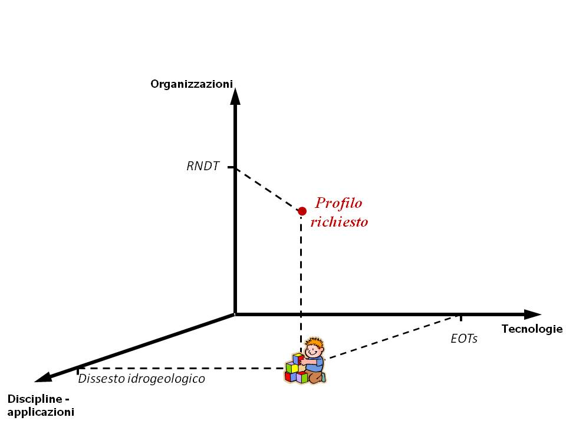

Il primo obiettivo che il Gruppo di Lavoro UNINFO “Profili professionali relativi all’informazione geografica” sta affrontando riguarda l’individuazione e la definizione delle principali figure professionali operanti nel settore Geo-ICT.
Il risultato di questa fase sarà parte integrante della norma a cui in generale questo tavolo tecnico sta lavorando e che si applica al “Professionista GI”, ovvero alla professione intellettuale “che viene esercitata -a diversi livelli di complessità e in diversi contesti organizzativi, pubblici e privati- da soggetti che svolgono prevalentemente attività inerenti la produzione, la raccolta, l’utilizzo e la condivisione di dati geografici digitali”.
Attraverso l’individuazione delle figure professionali maggiormente richieste dal mercato, la norma descriverà queste professioni, stabilendo per ognuna di esse il profilo professionale; vale a dire, descrivendo l’insieme di conoscenze, abilità e competenze necessarie a ogni figura professionale per svolgere la mansione richiesta.
Ci “terrà compagnia” lo European e-Competence Framework (e-CF), insieme alla nuova versione del GI Science & Technology – Body of Knowledge. Si tratta di un aggiornamento del documento pubblicato nel 20061, ottenuto nell’ambito del progetto GI-N2K (le cui attività si stanno concludendo proprio in questo mese di ottobre). Questa nuova edizione comprende anche un tool per la gestione e la fruizione dinamica del GI S&T –BoK stesso, il Virtual Lab for the BoK (VirLaBoK).
Mentre la metodologia basata sul sistema e-CF ci aiuterà a descrivere i profili professionali (ne abbiamo parlato qui), per delineare le abilità e le conoscenze tecniche richieste per ogni profilo faremo riferimento alle Knowledge Areas del GI S&T –BoK. Quest’approccio metodologico, oltre a fare riferimento al “catalogo” più completo e aggiornato delle discipline alla base del settore Geo-ICT, consentirà inoltre di servirsi del tool VirLaBoK, per individuare percorsi di training dedicati a ogni profilo professionale.
Su questo argomento torneremo con un prossimo post.
In questo vorremo invece condividere alcune riflessioni riguardanti l’obiettivo iniziale, ossia vorremmo condividere possibili orientamenti adottabili per identificare figure professionale del settore Geo-ICT.
Lo scorso maggio abbiamo pubblicato sul sito Big-GIM un questionario, per sollecitare suggerimenti da parte della comunità geomatica in Rete in tema di professioni relative all’informazione geografica: è tuttora possibile inserire contributi.
Le risposte finora ricevute (consultabili qui) mettono in evidenza quanto sia cambiata negli anni la sensibilità rispetto alle professioni relative all’informazione geografica. Alle proposte di figure professionali tradizionali della geomatica quali progettista, analista, operatore in ambito GIS oppure che richiamano ambiti specialistici (topografo, cartografo, geografo), ne sono state affiancate altre, che fanno riferimento a discipline diverse. Nelle risposte pervenute sono citate la statistica, la biologia e la sociologia, che possono essere prese come esempi, estratti da un insieme di discipline assai ampio. Ulteriori indicazioni fanno riferimento a possibili funzioni all’interno di organizzazioni (gestore di Infrastrutture di Dati Territoriali, gestori di processi di cittadinanza attiva, esperto di marketing territoriale) o, ancora, ambiti tecnologici: desktop, web o, ancora, Big Data. A proposito di dati, è interessante notare come le attività riguardanti la raccolta dei dati e la loro organizzazione sia espressa con molte definizioni, tra cui: data collector, spatial data analyst, fino a un originale Building Information Manager.
Questo campione di possibili figure professionali –sebbene sicuramente parziale- rende comunque evidente come sia importante stabilire dei criteri nuovi per individuare le principali figure professionali relative all’informazione geografica. Criteri che potrebbero essere di ausilio per individuare le professionalità operanti nel settore Geo-ICT, con un’attenzione anche alle richieste di abilità e competenze oggi emergenti.
Nel merito, occorre fissare i seguenti passi.
1. Stabilire i cambiamenti epocali di riferimento
- Sviluppo Sostenibile (SS), quale processo di cambiamento del percorso dello sviluppo, come fissato nella nuova Agenda Globale per lo Sviluppo Sostenibile e i relativi Obiettivi di Sviluppo Sostenibile (Sustainable Development Goals – SDGs nell’acronimo inglese) da raggiungere entro il 2030; approvata nel settembre del 2015 dai Paesi Membri delle Nazioni Unite
- Rivoluzione Digitale (RD), quindi
- Open Government come adesione ai principi di trasparenza, partecipazione e collaborazione grazie alla RD
- Smart City/Community2 (ecosistema smart) come sintesi paradigmatica della RD.
2. Fissare i cambiamenti culturali imposti dai cambiamenti epocali
Rispetto alla tematica che stiamo affrontando si può prendere come riferimento il concetto di
| Spatial enablement: capacità di fruire dei dati geografici digitali, intesa sia rispetto alla disponibilità di queste informazioni, sia come abilità conseguite per il loro sfruttamento |
|---|
Una Comunità è coerente a tale concetto3 se le informazioni geospaziali sono assunte come bene comune e sono rese disponibili per stimolare l’innovazione. Per stabilire questa condizione occorre soddisfare alcuni requisiti, tra cui:
- I membri della comunità devono essere spatially literate cioè essere in grado di fruire dei dati geospaziali, avendo anche la possibilità di acquisire un’istruzione adeguata
- Deve essere creata e resa disponibile la Spatial Data Infrastructure, ambiente favorevole per la condivisione di questo patrimonio informativo, grazie all’adozione di standard e di norme condivise a livello globale
- Devono essere progettati e abilitati processi comunicativi idonei per rendere fluida ed efficace la moltiplicazione qualitativa e quantitativa delle relazioni comunità-istituzioni; infatti, i membri della comunità sono la componente dinamica dell’ecosistema informativo e i processi necessari per il loro coinvolgimento devono quindi essere aderenti alle caratteristiche dei diversi contesti tecnologici, applicativi, sociali o individuali, al fine di creare conoscenza dal patrimonio informativo esistente.
3. Schematizzare l’individuazione delle principali figure professionali relative alla GI
La trasformazione culturale abbinata all’influenza delle ICT sta generando:
- sia la richiesta di professionisti qualificati con competenze spaziali4,
- sia la necessità di formare cittadini in grado di utilizzare consapevolmente le tecnologie spaziali nella loro vita quotidiana5.
L’individuazione delle principali figure professionali per l’informazione geografica dovrebbe seguire un approccio olistico.
Tenere quindi presente le tre dimensioni dello “spazio” in cui operano in generale i professionisti dell’informazione geografica:
- tecnologica,
- di dominio / applicativa
- organizzativa.
| Per quanto riguarda la prima dimensione (tecnologica), esempi possono essere (ipotesi di aggregazione):
– Data Management (web semantic, Analytics, Big Data, …) – IoT (wireless sensor networks, indoor localisation, augmented reality, …) – Earth Observation Technologies, EOT – ….. |
|---|
| Per la dimensione disciplinare/applicazioni possono essere prese come riferimento le tematiche d’intervento relative al paradigma Smart City6
 Due esempi di possibili use case (profilo professionale necessario) da definire in tale contesto 1. Esperto GI per Mobilità, Trasporti e Logistica Vedi, come un possibile riferimento, OpenTrasporti, Terzo Piano d’Azione Nazionale sull’Open Government, Luglio 2016. Ma anche: Autonomous Driving: challenges for Geographical Information Scientists and Practitioners, S. Di Martino GI-N2K, giugno 2016. 2. Esperto GI per Turismo e Cultura Vedi, Proposta Safeguarding and enhancing Europe’s intangible Cultural Heritage, come riferimento per inquadrare il framework |
|---|
| Rispetto alla terza dimensione (organizzativa), il framework di riferimento potrebbe essere il “Modello strategico di evoluzione del Sistema Informativo della Pubblica Amministrazione”.
Due esempi di possibili use case (profilo professionale necessario) da definire in tale contesto: 1. Evoluzione della SDI nazionale Vedi: Linee Guida per la produzione dei database geotopografici conformi alle norme del DM 10 novembre 2011. CPSG-CISIS. Giugno 2016 2. Alfabetizzazione geo-digitale Vedi: Programma nazionale per la cultura, la formazione e le competenze digitali – LINEE GUIDA: Indicazioni strategiche e operative. AGiD, maggio 2014. |
|---|
4. Una nuova famiglia di profili professionali inerenti l’informazione geografica
Ricordando l’incarico assegnato al Gruppo di Lavoro UNINFO
“A partire dal GIM, individuare e definire le principali figure professionali relative all’informazione geografica, impostando gli opportuni collegamenti con le norme internazionali e nazionali rilevanti e definendone le conoscenze, abilità e competenze anche al fine di fornire un utile strumento al legislatore, in un’ottica di complementarità tra la normazione tecnica volontaria e il settore cogente.”
e tenendo presente che la metodologia proposta dal sistema e-CF è orientata a descrivere una figura professionale complessa (nel nostro caso il “professionista GI”) attraverso la sua scomposizione in profili professionali corrispondenti alle principali figure professionali operanti nel settore Geo-ICT -non esaustive di tutte le professionalità richieste-, la schematizzazione illustrata nel precedente punto 3 può risultare utile per consentire l’identificazione di profili di terza generazione (G3), adottando terminologie comuni per la definizione delle competenze nell’ambito delle professionalità del settore Geo-ICT stesso.
In altri termini, le tre dimensioni adottate per descrivere lo “spazio” in cui operano in generale i professionisti dell’informazione geografica aiutano nella ricerca e nell’individuazione delle competenze basilari (in quest’ottica esse sono da considerarsi indipendenti). Tramite combinazioni di competenze riferibili a ognuna delle tre dimensioni sarà quindi possibile ottenere il profilo professionale relativo a specifiche esigenze.
A titolo di esempio, nell’ambito di un progetto riguardante il tema del dissesto idrogeologico potrà essere necessario avvalersi di un professionista GI, esperto di Earth Observation Technologies, EOTs, in grado di organizzare e gestire la meta datazione, secondo le regole previste per il Repertorio Nazionale dei Dati Territoriali, RNDT. Secondo la schematizzazione illustrata, a tale profilo professionale corrisponde un punto nello spazio della GI, individuato da “x” competenze tecnologiche, “y” disciplinari e “z” di essenza organizzativa.

Figura 1. “Little-GIM” grows up
Post scritto insieme a Monica Sebillo
- DiBiase, D., DeMers, M., Johnson, A., Kemp, K., Luck, A. T., Plewe, B., Wentz, E., Eds. (2006). Geographic Information
Science & Technology Body of Knowledge. Washington, D.C., Association of American Geographers.
http://downloads2.esri.com/edcomm2007/bok/GISandT_Body_of_knowledge.pdf↩ - Definizione di riferimento: proiezione astratta di comunità del futuro, riconducibile a un’idea di società che rispecchi l’evoluzione culturale e le tensioni sociali emergenti della nostra epoca.↩
- Vedi : S. Roche, N. Nabian, K. Kloeckl, C. Ratti. Are ‘Smart Cities’ Smart Enough? Global Geospatial Conference 2012: Spatially Enabling Government, Industry and Citizens, Québec City, Canada, 14-17 May 2012. http://senseable.mit.edu/papers/pdf/20120513_Roche_etal_SmartCities_SpatiallyEnabling.pdf↩
- A questo riguardo si segnala il survey effettuato all’interno del già citato progetto GI-N2K; vedi il documento: “Integrated analysis of the demand for and supply of geospatial education and training”, http://www.gi-n2k.eu/surveys-results/↩
- Committee on the Support for the Thinking Spatially: The Incorporation of Geographic Information Science Across the K-12 Curriculum. Committee on Geography; Board on Earth Sciences and Resources; Division on Earth and Life Studies; National Research Council. “Learning to Think Spatially: GIS as a Support System in the K-12 Curriculum”. THE NATIONAL ACADEMIES PRESS, 2006 http://www.nap.edu/catalog/11019/learning-to-think-spatially-gis-as-a-support-system-in↩
- Paradigma Smart City: aree tematiche di intervento (adattato da: European Smart Cities, http://www.smart-cities.eu, 2012)↩